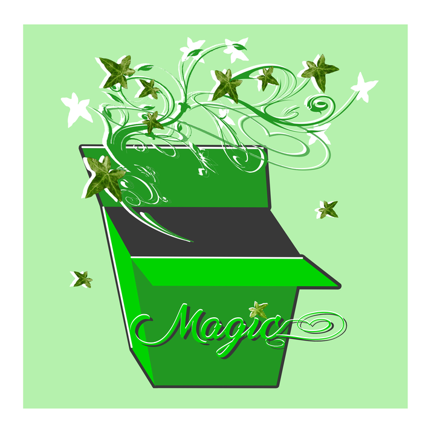
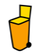
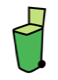
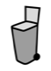

LA POUBELLE MAGIQUE
Le code de couleur
La poubelle jaune

- Le plastique
- Les emballages
- Les cartons d'emballage
- L'acier et l'aluminium
- Le canettes
- Les conserves
- Le papier (si pas de poubelle bleue)
- Ne pas mettre les bouchons
La poubelle verte

- Le verre propre
- Les bouteilles en verre
- Les bocaux en verre
- Pas de bouchon
- Pas de couvercle
- Pas de sauce ou de l'alimentaire
La poubelle bleu
- Le papier
- Les journaux
- Les annuaires
- Les prospectus
La poubelle classique

- Le reste des déchets
L'acier et l'aluminium :
Recyclables :
- Les boîtes de conserve
- Les canettes de boisson
- Les aérolsols
- Les bidons
- Les barquettes d'aluminium
Les erreurs de tri :
- Les boîtes de conserve avec des restes alimentaires
- Les canettes de boisson
- Les aérolsols
- Les bidons
- Les barquettes d'aluminium
Le papier :
Recyclables :
- Les publicités
- Les prospectus
- Les journaux
- Les magazines
- Les catalogues
- Les annuaires
- Les courriers
- Les lettres
- Les impressions
- Les enveloppes avec ou sans fenêtres
Les erreurs de tri :
- Les papiers salis
- L'essuie-tout
- Le papier peint
- Le papier carbone
Le plastique & cartons d'emballage :
Recyclables :
- Les bouteilles en plastique (eau, lait, jus de fruit, soda...)
- Les flacons en plastique (shampoing, gel douche, bain moussant...)
- Les nettoyants ménagers (adoucissant, lessive, liquide-vaisselle, eau de javel...)
- Les flacons alimentaires (bouteilles d'huile, mayonnaise, ketchup...)
- Les boîtes et suremballages en carton (viande, poisson...)
- Les briques alimentaires (lait, crème...)
Les erreurs de tri :
- Le plastique très léger comme les pots de yaourt, pots de crème...
- Les films de décongélation
- Les barquettes ou pots de jardinage
- Les blisters (emballage des médicaments, plastique fermant les barquettes, pochette plastique des magazines, papier à bulle ...)
- Les barquettes translucides
- Le polystyrène...
Le verre :
Recyclables :
- Les bocaux
- Les pots sans couvercle ni bouchon
Les erreurs de tri :
- Le bris de glace
- Les assiettes
- Le verre
- Les néons
- Les pare-brises
- Les ampoules...
Les déchets non recyclables :
Les seringues, les couches-culottes salies, les papiers sales (mouchoirs utilisés, papier gras…), barquettes en carton , boîte de conserve avec restes alimentaires…